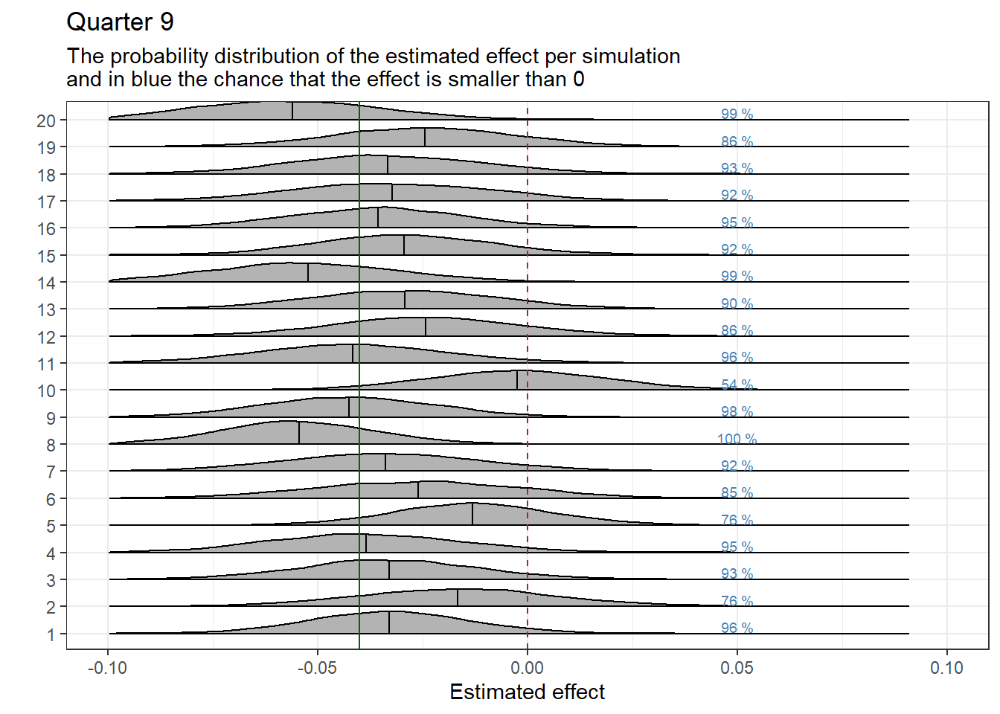
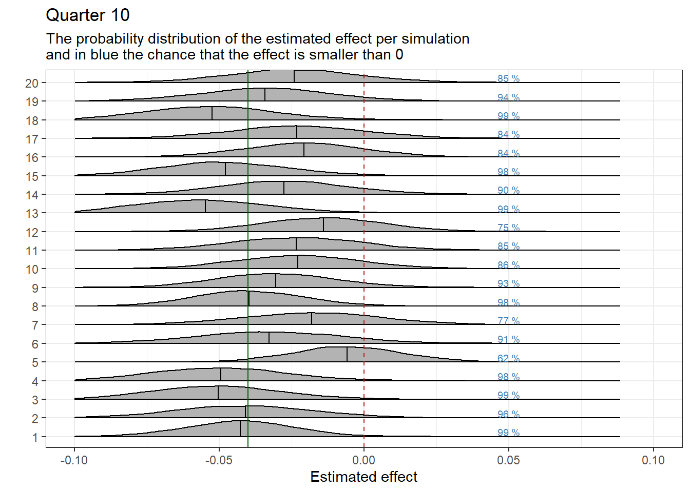
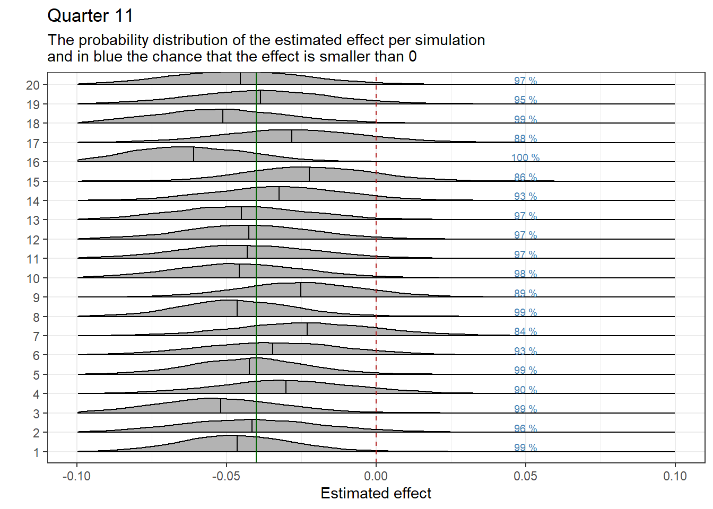
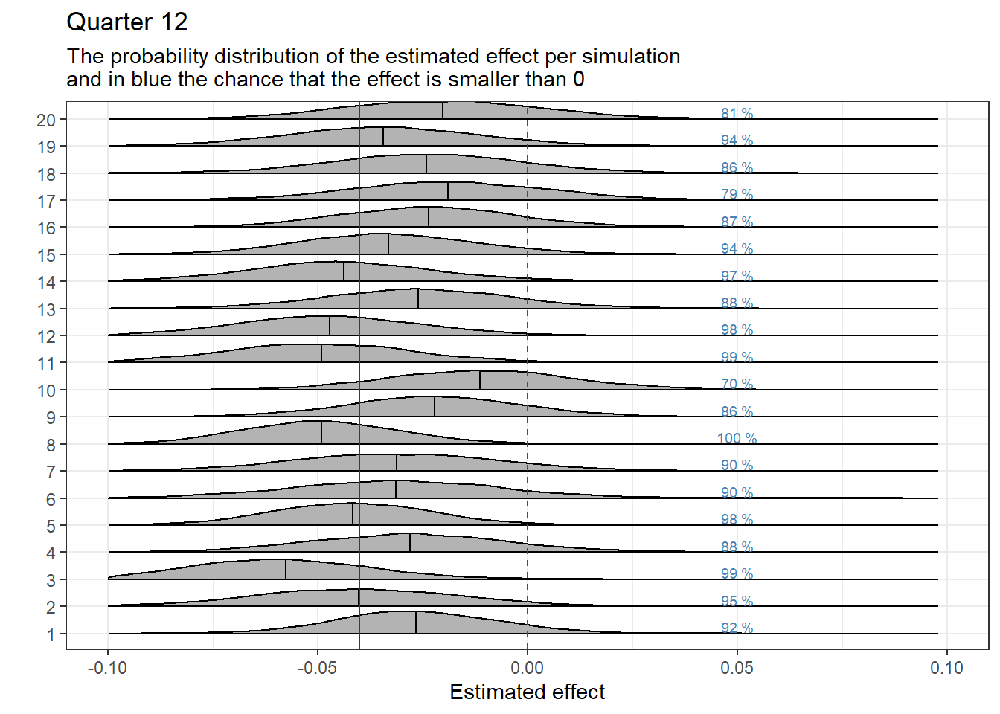

This blog provides an example of conducting Bayesian power analyses, focusing on a healthcare study comparing intervention and control practices. It covers setting up simulations, generating data, adjusting for time trends, and estimating effects with Bayesian regression. Installation instructions for necessary software and R packages, alongside tips for running simulations and analyzing results, are also included.
Authors
Affiliations
Misja Mikkers
University of Twente
Tessa Voesenek
Dutch Healthcare Authority (NZa)
Published
March 20, 2024
Introduction
Insurance company VGZ and some general practitioners from the care group Syntein are starting an experimental form of financing that aligns with working according to the principles of Positive Health. The intervention practices will be funded through a complete subscription-based financing model in the experiment. We expect that these practices will have a lower number of referrals to secondary care compared to the control practices designated for this study. In this document, we explain how we will determine the effect of the intervention through Bayesian analysis, despite having a relatively limited number of intervention practices. We begin by explaining the principles of Bayesian statistics and then show step by step how we construct the data and analysis. We visualize the results and demonstrate how they change with different premises. The installation instructions describe how you can reproduce this document yourself. This blog only describes the analyses; the broader research design will outlined in a separate document.
Note: This research follows up on a previous experiment where only the general practice in Afferden was funded through a complete subscription fee. In this blog, we sometimes refer to the findings of this experiment. The research results are published here. This blog is also published in Dutch on the NZa github website.
The principles of Bayesian analysis
We employ the principles of Bayesian analysis to assess the effectiveness of a subscription-based financing model at a number of Syntein general practices. We work with a limited number of data points. Unlike traditional significance tests, which focus on determining whether an effect is statistically significant, our Bayesian analysis aims to estimate the probability that the intervention actually has a specific effect.
In Bayesian analysis, we start by explicitly stating our expectation about the effect of the experiment. This initial belief is also known as a “prior.” Although we theoretically expect the number of referrals to decrease at the intervention practices, we have not yet seen evidence of this. Therefore, we formulate our prior conservatively and assume that the intervention has no effect, with a considerable degree of uncertainty. This means we initially assume that the chance of a positive effect (fewer referrals) is as great as a negative effect (more referrals).
Next, we collect data. Based on this data, we adjust our prior beliefs. The adjusted belief is expressed in the so-called ‘posterior’. The posterior represents the probability that the intervention has an effect, taking into account both our initial belief (the prior) and the data. In other words: the posterior is a mix of the prior and the data. As we collect more data, the influence of the prior on the value of the posterior decreases (for example, we can get more data by adding intervention and control practices, or when we switch to an analysis at the patient level).
In the first part of this simulation, you will see that our conservatively set prior (expecting no effect) results in a posterior that is slightly lower than the actual effect. We also show that with an overly optimistic prior (expecting a larger effect than there actually is), the posterior is slightly higher than the actual effect. However, these differences are minor when we include sufficient uncertainty in our priors. This is evident in the second part of the simulation.
In summary, the use of Bayesian analysis allows us to work with limited data and still obtain useful insights about the likelihood of an intervention effect. This is particularly relevant in situations where it is difficult to collect enough data points to perform traditional significance tests. By shifting the focus from mere significance to probability, we can better deal with uncertainty and variability in our results.
How does the simulation work?
Generating base data based on parameters
We use the control practices from the previous study to generate the data for this simulation. These practices had about 0.35 to 0.45 referrals per enrolled patient, with a standard deviation of 0.02. Based on these parameters, we generate a dataset that serves as our “base data.” The control practices receive a random number of referrals between 0.37 and 0.43. The intervention practices receive a fixed number of 0.40 referrals. By maintaining a fixed value for the intervention practices, we can easily relate the effect to the starting value later on.
Adding an effect
To this base data, we manually add an effect to simulate the intervention. For example, we add an effect of -0.04 (the number of referrals per patient decreases by 0.04). Relating this to the starting value of the intervention practices (0.4), you see a decrease of 10% (0.04/0.4).
Bayesian regression
After introducing the effect, we perform a Bayesian regression on the dataset. Based on the results of the regression, we can assess how accurately and precisely we have estimated the effect, given the inherent noise and variability in the data.
The participating parties in the study can choose to achieve a certain minimum effect (and decide, for example, to stop the experiment if this is not achieved). Therefore, we also show how the results can be used to determine the certainty around achieving this minimum effect. The likelihood of achieving the minimum effect (given the inherent noise and variability in the data) is represented in a probability distribution.
Repeated Analysis
We do not perform the regression just once, but repeat it several times. With each repetition (iteration), we generate a new dataset, while continuing to work with the same parameters. This gives us a series of results that illustrate the stability and reproducibility of our analysis. The repetitions help us understand how effective and reliable our analysis is at estimating effects and assessing probabilities, even in situations where limited data points are available.
Final Note
Finally, we want to note that we have written this simulation for the total number of referrals because we had information on this from previous research. We expect that other interesting outcomes (for example, subcategories of referrals) will contain much more noise than the total number of referrals. However, we can only conduct a proper simulation when we have the referrals from the relevant practices.
What we can modify in this simulation
It’s possible to run and modify this simulation yourself. This section briefly outlines what’s needed to run this simulation on your own. You can adjust all values in the code blocks of this chapter and observe the effects on the outcomes.
Free software is required. Installation instructions can be found at the bottom of this notebook.
Code
# packages and settingsknitr::opts_chunk$set(eval =TRUE, warning =FALSE, message =FALSE)scipen=999# Installing packages -> only needs to be done once, then they can be loaded# install.packages(c("tidyverse", "ggridges", "brms"))# Loading packageslibrary(tidyverse)# for data wrangling and plotslibrary(ggridges)# for posterior plotslibrary(brms)# for Bayesian analysis (interface to Stan)
number of practices
Code
# Choose number of intervention practicesIP<-2# Choose number of control practicesCP<-3
We have 2 intervention and 3 control practices. This number can be adjusted in the “number of practices” code block above. For the base data generated below, we opt for an average number of referrals per patient of about 0.4 with a standard deviation of 0.02. These parameters are based on the control practices from the previous study in Afferden. Note, however, that, in the previous study, we only had annual data; these data are generated per quarter. It is not entirely clear whether the variation on a quarterly basis is larger.
Note: To conduct the analysis, we need:
Number of referrals per practice (from the healthcare domain)
Number of registered patients per quarter
Trend Over Time
Code
# Choose a time trend (structural increase/decrease per quarter) that applies to all practices.TimeTrend<--0.01
It’s entirely possible that there’s a natural trend (independent of the intervention) in the number of referrals. In the data from the control practices in the Afferden study, it seems that referrals across all practices slightly decrease over time. A time trend might complicate estimating the effect, which is why we’ve also introduced a time trend. This time trend can be adjusted in the code block above.
Effect size and minimum Effect
Code
# Choose effect sizeEffect<--0.04# 0.04 represents approximately a 10% decrease in referrals# Choose minimum effectMinimumEffect<-0# Calculate the percentage reduction in referrals for the textRE<-(Effect/0.4)*100
We manually add an effect to our data. In this analysis, we have added an effect of approximately -10 in referrals. The figure we should obtain from our analysis is -0.04. This effect can be adjusted larger or smaller in the code block above.
Additionally, we can determine a minimum effect. In this analysis, the minimum effect we wish to observe is set at 0.
In our simulation, we obtain the full probability distribution of effect sizes. Generally (but not necessarily), these probability distributions are reasonably normally distributed. We can then estimate the average effect. This estimate should approximately match the effect we have introduced in our simulation. In this case, the average should be close to -0.04. Since we have a full probability distribution, we can also say something about the likelihood of achieving a certain minimum effect.
If we set the minimum effect at 0, we can say based on the probability distribution: There is an x% chance that the number of referrals has decreased.
Aantal simulaties
Code
# Choose the number of regressions to be runIterations<-20
Finally, we can determine the number of regressions by adjusting the number of Iterations in the code block above. Running regressions is time-consuming and memory-intensive, and the plots of the outcomes take up a lot of space. Therefore, it is advised not to set the number of iterations too high. In this analysis, the number of regressions has been set to 20.
Generating Base Data and Performing Regressions
Base data
Code
set.seed(123)# For reproducibility# Create a tibble with practice identifiers and initial referral ratesdf1<-tibble(id =1:(IP+CP))%>%# Assign intervention or control status to practicesmutate(Intervention =ifelse(test =id<=2, yes =1, no =0))%>%# Set up average referrals per enrolled patient for the first quarter (the base)# To keep the evaluation straightforward, intervention practices receive the same base percentagemutate(Q1 =c(rep(40, each =IP), sample(x =37:43, size =3))/100)
In the code snippet above, the base data are generated. Practices are categorized as either intervention or control practices, and for each practice, the average number of referrals for the first quarter is set. We will later simulate 11 additional quarters, with the intervention starting in quarter 9.
Simulation
Code
# Here we simulate (based on the chosen number of regressions) data repeatedly and then run regressions.fullrun<-0if(fullrun){# create empty vectors for estimates and CIsnames<-c("9", "10", "11", "12")var_lst<-sapply(paste0("Estimate_", names), function(x)assign(x, NULL))var_lst2<-sapply(paste0("upper_", names), function(x)assign(x,NULL))var_lst3<-sapply(paste0("lower_", names), function(x)assign(x,NULL))list2env(var_lst, .GlobalEnv)list2env(var_lst2, .GlobalEnv)list2env(var_lst3, .GlobalEnv)# create an empty tibble for posteriorsamples<-tibble()# starting the for-loopfor(iin1:Iterations){# # varying set.seeds for reproducibilityset.seed(1000+i*10)# create a tibble with other quartersdf<-df1%>%mutate(Q2 =rnorm(n =5, mean =(1+TimeTrend)*Q1, sd =0.02), Q3 =rnorm(n =5, mean =(1+TimeTrend)^2*Q1, sd =0.02), Q4 =rnorm(n =5, mean =(1+TimeTrend)^3*Q1, sd =0.02), Q5 =rnorm(n =5, mean =(1+TimeTrend)^4*Q1, sd =0.02), Q6 =rnorm(n =5, mean =(1+TimeTrend)^5*Q1, sd =0.02), Q7 =rnorm(n =5, mean =(1+TimeTrend)^6*Q1, sd =0.02), Q8 =rnorm(n =5, mean =(1+TimeTrend)^7*Q1, sd =0.02),# the intervention begins now Q9 =rnorm(n =5, mean =(1+TimeTrend)^8*Q1, sd =0.02)+Effect*Intervention, Q10 =rnorm(n =5, mean =(1+TimeTrend)^9*Q1, sd =0.02)+Effect*Intervention, Q11 =rnorm(n =5, mean =(1+TimeTrend)^10*Q1, sd =0.02)+Effect*Intervention, Q12 =rnorm(n =5, mean =(1+TimeTrend)^11*Q1, sd =0.02)+Effect*Intervention)%>%# make data longpivot_longer(cols =Q1:Q12, names_to ="Quarter", values_to ="Referrals")%>%# make quarter numeric to create the intervention variablemutate(Quarter =str_sub(Quarter, start =2))%>%# create our effect variablesmutate(DiD_9 =ifelse(test =as.numeric(Quarter)==9&Intervention==1, yes =1, no =0))%>%mutate(DiD_10 =ifelse(test =as.numeric(Quarter)==10&Intervention==1, yes =1, no =0))%>%mutate(DiD_11 =ifelse(test =as.numeric(Quarter)==11&Intervention==1, yes =1, no =0))%>%mutate(DiD_12 =ifelse(test =as.numeric(Quarter)==12&Intervention==1, yes =1, no =0))%>%# turn quarter into a factormutate(Quarter =as.factor(Quarter))# FormulaFormula<-"Referrals ~ 0 + Intercept + id + Quarter + DiD_9 + DiD_10 + DiD_11 + DiD_12"# Priors## non informativce priorsprior1<-c(set_prior("normal(0.4, 0.04)", class ="b", coef ="Intercept"),set_prior("normal(0, 0.05)", class ="b", coef ="DiD_9"),set_prior("normal(0, 0.05)", class ="b", coef ="DiD_10"),set_prior("normal(0, 0.05)", class ="b", coef ="DiD_11"),set_prior("normal(0, 0.05)", class ="b", coef ="DiD_12"))reg1<-brm( formula =Formula, prior =prior1, warmup =1000, iter =2500, data =df, chains =4, cores =6, init ="random", control =list(adapt_delta =0.8, max_treedepth =12), seed =123, backend ="cmdstanr",)# Fill Empty Vectors with Summary Numbers (Estimate and CI)Estimate_9[i]=fixef(reg1)[14,1]lower_9[i]=fixef(reg1)[14,3]upper_9[i]=fixef(reg1)[14,4]Estimate_10[i]=fixef(reg1)[15,1]lower_10[i]=fixef(reg1)[15,3]upper_10[i]=fixef(reg1)[15,4]Estimate_11[i]=fixef(reg1)[16,1]lower_11[i]=fixef(reg1)[16,3]upper_11[i]=fixef(reg1)[16,4]Estimate_12[i]=fixef(reg1)[17,1]lower_12[i]=fixef(reg1)[17,3]upper_12[i]=fixef(reg1)[17,4]## Create a tibble for each quarterResults_9<-tibble(Estimate =Estimate_9, lower =lower_9, upper =upper_9)%>%mutate(Quarter ="Quarter 9")Results_10<-tibble(Estimate =Estimate_10, lower =lower_10, upper =upper_10)%>%mutate(Quarter ="Quarter 10")Results_11<-tibble(Estimate =Estimate_11, lower =lower_11, upper =upper_11)%>%mutate(Quarter ="Quarter 11")Results_12<-tibble(Estimate =Estimate_12, lower =lower_12, upper =upper_12)%>%mutate(Quarter ="Quarter 12")## Combine the TibblesResults=rbind(Results_9, Results_10, Results_11, Results_12)# posterior drawssamples_temp<-tibble(as_draws_df(reg1))%>%mutate(Run =as.factor(i))samples<-samples%>%rbind(samples_temp)}saveRDS(Results, "Results.RDS")saveRDS(samples, "samples.RDS")}else{Results<-readRDS("Results.RDS")samples<-readRDS("samples.RDS")}
In the code above, we repeatedly carry out simulations, each time generating slightly different data. We simulate the average referrals per registered patient for quarters 2 through 12, introducing some random variation and a time trend around the number applicable for the first quarter. This added variation (referred to as noise and set at 0.02) amounts to about 5% of the number of referrals and is based on data from control practices in the Afferden study.
Afterwards, we perform Bayesian regression on each simulated dataset and save the results. In executing these regressions, we start with an initial and somewhat conservative expectation that the intervention has no effect. However, we allow for uncertainty. Therefore, we set an effect whose probability distribution is normally distributed around 0, with a standard deviation of 0.05. This implies we expect about a 95% chance that the effect falls between -0.1 and 0.1. This translates into an effect of approximately plus or minus 25% on the number of referrals. Very large effects (such as those observed in previous research in Afferden) are considered very unlikely with this initial expectation. For completeness, we have also tested an alternative initial expectation, where we expect a large effect. This has only a limited impact on the results. See the following section on the influence of a different prior.
Visualizations of the Estimates
We graphically display the results of the regressions by quarter. Each graph shows the estimated effect per iteration, represented as a probability distribution. The black vertical line within the distribution represents the estimated mean effect. The green vertical line marks the established effect as we previously manually inputted. We expect the effect estimates to be close to the established effect. Previously, we set whether the effect is positive (fewer referrals) or negative (more referrals). The following interpretation applies when the effect is set to be positive: A black line to the left of the green line indicates that the actual effect is overestimated. When the black line is to the right of the green line, the actual effect is underestimated.
The vertical red dotted line indicates a zero effect. On the right side of the probability distributions, the chance that the effect is at least equal to, or less than, the desired minimum effect in which we are interested is displayed in blue text. In this case, the minimum effect is set at 0.
Code
Subplottitle<-paste0("The probability distribution of the estimated effect per simulation\nand in blue the chance that the effect is smaller than ", MinimumEffect)samples_MinimumEffect9<-samples%>%mutate(EffectBelowMinimum =ifelse(test =b_DiD_9<MinimumEffect, yes =1, no =0))%>%group_by(Run)%>%summarise(Percentage1 =mean(EffectBelowMinimum))%>%ungroup()%>%mutate(Percentage =paste0(round(Percentage1*100, 0), " %"))%>%mutate(Run_extra =as.numeric(Run))ggplot(data =samples, aes(x =b_DiD_9, y =Run))+geom_density_ridges2(scale =0.85, quantile_lines=TRUE, quantile_fun=function(x,...)mean(x))+geom_vline(xintercept =0, color ="firebrick", linetype ="dashed")+geom_vline(xintercept =Effect, color ="darkgreen")+theme_bw()+theme(legend.position ="none")+labs(y =" ", x ="Estimated effect", title ="Quarter 9", subtitle =Subplottitle)+geom_text(data =samples_MinimumEffect9, aes(x =0.05, y =(as.numeric(Run)+0.25), label =Percentage), size =2.5, color ="steelblue")+xlim(-0.1, 0.1)

Code
samples_MinimumEffect10<-samples%>%mutate(EffectBelowMinimum =ifelse(test =b_DiD_10<MinimumEffect, yes =1, no =0))%>%group_by(Run)%>%summarise(Percentage1 =mean(EffectBelowMinimum))%>%ungroup()%>%mutate(Percentage =paste0(round(Percentage1*100, 0), " %"))%>%mutate(Run_extra =as.numeric(Run))ggplot(data =samples, aes(x =b_DiD_10, y =Run))+geom_density_ridges2(scale =0.85, quantile_lines=TRUE, quantile_fun=function(x,...)mean(x))+geom_vline(xintercept =0, color ="firebrick", linetype ="dashed")+geom_vline(xintercept =Effect, color ="darkgreen")+theme_bw()+theme(legend.position ="none")+labs(y =" ", x ="Estimated effect", title ="Quarter 10", subtitle =Subplottitle)+geom_text(data =samples_MinimumEffect10, aes(x =0.05, y =(as.numeric(Run)+0.25), label =Percentage), size =2.5, color ="steelblue")+xlim(-0.1, 0.1)

Code
samples_MinimumEffect11<-samples%>%mutate(EffectBelowMinimum =ifelse(test =b_DiD_11<MinimumEffect, yes =1, no =0))%>%group_by(Run)%>%summarise(Percentage1 =mean(EffectBelowMinimum))%>%ungroup()%>%mutate(Percentage =paste0(round(Percentage1*100, 0), " %"))%>%mutate(Run_extra =as.numeric(Run))ggplot(data =samples, aes(x =b_DiD_11, y =Run))+geom_density_ridges2(scale =0.85, quantile_lines=TRUE, quantile_fun=function(x,...)mean(x))+geom_vline(xintercept =0, color ="firebrick", linetype ="dashed")+geom_vline(xintercept =Effect, color ="darkgreen")+theme_bw()+theme(legend.position ="none")+labs(y =" ", x ="Estimated effect", title ="Quarter 11", subtitle =Subplottitle)+geom_text(data =samples_MinimumEffect11, aes(x =0.05, y =(as.numeric(Run)+0.25), label =Percentage), size =2.5, color ="steelblue")+xlim(-0.1, 0.1)

Code
samples_MinimumEffect12<-samples%>%mutate(EffectBelowMinimum =ifelse(test =b_DiD_12<MinimumEffect, yes =1, no =0))%>%group_by(Run)%>%summarise(Percentage1 =mean(EffectBelowMinimum))%>%ungroup()%>%mutate(Percentage =paste0(round(Percentage1*100, 0), " %"))%>%mutate(Run_extra =as.numeric(Run))ggplot(data =samples, aes(x =b_DiD_12, y =Run))+geom_density_ridges2(scale =0.85, quantile_lines=TRUE, quantile_fun=function(x,...)mean(x))+geom_vline(xintercept =0, color ="firebrick", linetype ="dashed")+geom_vline(xintercept =Effect, color ="darkgreen")+theme_bw()+theme(legend.position ="none")+labs(y =" ", x ="Estimated effect", title ="Quarter 12", subtitle =Subplottitle)+geom_text(data =samples_MinimumEffect12, aes(x =0.05, y =(as.numeric(Run)+0.25), label =Percentage), size =2.5, color ="steelblue")+xlim(-0.1, 0.1)

The Influence of Different Initial Expectations (Priors)
We ran the simulation again as described above. The only change we made is that we now use a more optimistic initial expectation (prior). Our initial expectation is now that the intervention has an effect of -0.2, which means the intervention leads to a decrease of about 50% in the average number of referrals per registered patient (with an average number of referrals of 0.4). By assigning a significant degree of uncertainty (indicated by a standard deviation of 0.2), this optimistic expectation remains flexible and subject to adjustment based on the collected data.
The graph below shows the effect of this optimistic prior compared to the conservative prior. We present the averages and standard deviations for both priors. With an actual effect of -0.04 (a 10% decrease), the optimistic prior slightly overestimates the effect, while the conservative prior slightly underestimates it. Choosing the best prior depends on our research goals. Since it’s particularly important in this research not to overestimate the effect, we will use a conservative prior for our main analysis.
Code
# Here we simulate (based on the chosen number of regressions) data repeatedly and then run regressions.fullrun<-0if(fullrun){# create empty vectors for estimates and CIsnames<-c("9", "10", "11", "12")var_lst<-sapply(paste0("Estimate_", names), function(x)assign(x, NULL))var_lst2<-sapply(paste0("upper_", names), function(x)assign(x,NULL))var_lst3<-sapply(paste0("lower_", names), function(x)assign(x,NULL))list2env(var_lst, .GlobalEnv)list2env(var_lst2, .GlobalEnv)list2env(var_lst3, .GlobalEnv)# create an empty tibble for posteriorsamples<-tibble()# starting the for-loopfor(iin1:Iterations){# # varying set.seeds for reproducibilityset.seed(1000+i*10)# create a tibble with other quartersdf<-df1%>%mutate(Q2 =rnorm(n =5, mean =(1+TimeTrend)*Q1, sd =0.02), Q3 =rnorm(n =5, mean =(1+TimeTrend)^2*Q1, sd =0.02), Q4 =rnorm(n =5, mean =(1+TimeTrend)^3*Q1, sd =0.02), Q5 =rnorm(n =5, mean =(1+TimeTrend)^4*Q1, sd =0.02), Q6 =rnorm(n =5, mean =(1+TimeTrend)^5*Q1, sd =0.02), Q7 =rnorm(n =5, mean =(1+TimeTrend)^6*Q1, sd =0.02), Q8 =rnorm(n =5, mean =(1+TimeTrend)^7*Q1, sd =0.02),# the intervention begins now Q9 =rnorm(n =5, mean =(1+TimeTrend)^8*Q1, sd =0.02)+Effect*Intervention, Q10 =rnorm(n =5, mean =(1+TimeTrend)^9*Q1, sd =0.02)+Effect*Intervention, Q11 =rnorm(n =5, mean =(1+TimeTrend)^10*Q1, sd =0.02)+Effect*Intervention, Q12 =rnorm(n =5, mean =(1+TimeTrend)^11*Q1, sd =0.02)+Effect*Intervention)%>%# make data longpivot_longer(cols =Q1:Q12, names_to ="Quarter", values_to ="Referrals")%>%# make quarter numeric to create the intervention variablemutate(Quarter =str_sub(Quarter, start =2))%>%# create our effect variablesmutate(DiD_9 =ifelse(test =as.numeric(Quarter)==9&Intervention==1, yes =1, no =0))%>%mutate(DiD_10 =ifelse(test =as.numeric(Quarter)==10&Intervention==1, yes =1, no =0))%>%mutate(DiD_11 =ifelse(test =as.numeric(Quarter)==11&Intervention==1, yes =1, no =0))%>%mutate(DiD_12 =ifelse(test =as.numeric(Quarter)==12&Intervention==1, yes =1, no =0))%>%# turn quarter into a factormutate(Quarter =as.factor(Quarter))# FormulaFormula<-"Referrals ~ 0 + Intercept + id + Quarter + DiD_9 + DiD_10 + DiD_11 + DiD_12"# Priors## informative priorsprior2<-c(set_prior("normal(0.4, 0.04)", class ="b", coef ="Intercept"),set_prior("normal(-0.2, 0.2)", class ="b", coef ="DiD_9"),set_prior("normal(-0.2, 0.2)", class ="b", coef ="DiD_10"),set_prior("normal(-0.2, 0.2)", class ="b", coef ="DiD_11"),set_prior("normal(-0.2, 0.2)", class ="b", coef ="DiD_12"))reg2<-brm( formula =Formula, prior =prior2, warmup =1000, iter =2500, data =df, chains =4, cores =6, init ="random", control =list(adapt_delta =0.8, max_treedepth =12), seed =123, backend ="cmdstanr",)Estimate_9[i]=fixef(reg2)[14,1]lower_9[i]=fixef(reg2)[14,3]upper_9[i]=fixef(reg2)[14,4]Estimate_10[i]=fixef(reg2)[15,1]lower_10[i]=fixef(reg2)[15,3]upper_10[i]=fixef(reg2)[15,4]Estimate_11[i]=fixef(reg2)[16,1]lower_11[i]=fixef(reg2)[16,3]upper_11[i]=fixef(reg2)[16,4]Estimate_12[i]=fixef(reg2)[17,1]lower_12[i]=fixef(reg2)[17,3]upper_12[i]=fixef(reg2)[17,4]Results_9<-tibble(Estimate =Estimate_9, lower =lower_9, upper =upper_9)%>%mutate(Quarter ="Quarter 9")Results_10<-tibble(Estimate =Estimate_10, lower =lower_10, upper =upper_10)%>%mutate(Quarter ="Quarter 10")Results_11<-tibble(Estimate =Estimate_11, lower =lower_11, upper =upper_11)%>%mutate(Quarter ="Quarter 11")Results_12<-tibble(Estimate =Estimate_12, lower =lower_12, upper =upper_12)%>%mutate(Quarter ="Quarter 12")Results=rbind(Results_9, Results_10, Results_11, Results_12)# posterior drawssamples_temp<-tibble(as_draws_df(reg2))%>%mutate(Run =as.factor(i))samples<-samples%>%rbind(samples_temp)}saveRDS(Results, "Results2.RDS")saveRDS(samples, "samples2.RDS")}else{Results2<-readRDS("Results2.RDS")samples2<-readRDS("samples2.RDS")}
You only need to open RStudio. If you are installing RStudio for the first time, it will likely prompt you to install a number of packages (collections of functions). It is necessary to do so. RStudio installs these packages itself.
In addition, a number of packages (see the library() code in the settings code block at the top) need to be installed. This only needs to be done once. To do this, you should remove the hash (#) before install.packages() and run the code with the play button. Afterward, you can put the hash back (then the code is not run).
With the “Render” button (next to the blue arrow, about in the middle of the toolbar), you can regenerate this HTML. Note: The estimations take a lot of time. Therefore, a function named fullrun() has been created. The recommendation is to first run the 2 simulation code blocks after a change with fullrun <- 1 and then set fullrun back to fullrun <- 0 and run each simulation separately. After doing that, you can use the Render button to create a new HTML.